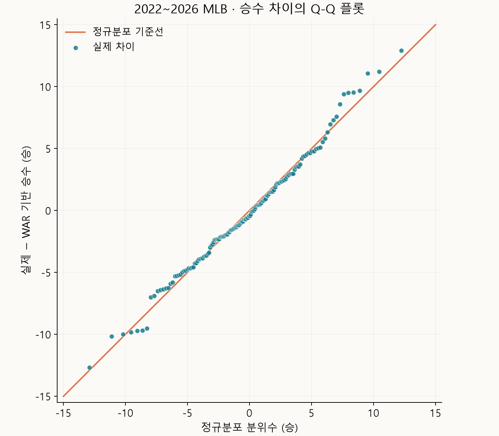

WAR는 선수의 활약을 평가할 때 쓰이는 지표다. 하지만 팀의 승리에는 선수 개인의 역량 외에도 감독의 용병술이나 운, 심판의 판정도 영향을 줄 것 같았다. 선수들의 WAR를 합치면 이런 요소들이 섞인 실제 팀의 승리와 얼마나 잘 맞을지 궁금했다.
2022~2026년 MLB 정규시즌의 30개 팀씩, 총 150개 팀·시즌을 비교했다. WAR는 FanGraphs의 fWAR를 사용했다.
팀별 WAR와 실제 승수
WAR는 선수가 대체선수보다 얼마나 더 많은 승리에 기여했는지를 추정하는 지표다.
전체 150개 팀·시즌에서 WAR와 실제 승수의 상관계수는 0.929였다. 팀 WAR와 실제 승수는 꽤 잘 맞았다.
연도별 관계
각 시즌에서도 강한 상관성이 나타나는지 나눠서 살펴봤다.
| 시즌 | WAR와 실제 승수의 상관계수 |
|---|---|
| 2022년 | 0.981 |
| 2023년 | 0.902 |
| 2024년 | 0.941 |
| 2025년 | 0.921 |
| 2026년 | 0.873 |
매년 30개 팀을 따로 비교해도 상관계수는 0.873~0.981이었다.
WAR로 환산한 승수
이번에는 WAR를 팀 승수로 바꾸면 실제와 얼마나 가까운지 살펴봤다.
FanGraphs의 설명에서는 대체선수들로만 구성된 팀도 162경기에서 약 48승을 거둘 것으로 본다. 이를 기준으로 승수를 환산했다.
WAR 기반 승수 = 48 × 경기 수 ÷ 162 + 팀 WAR
| 비교 항목 | 전체 150개 팀·시즌 결과 |
|---|---|
| 실제 승수와의 평균 절대차이 | 3.65승 |
| 차이가 ±5승 이내인 경우 | 113개, 75.3% |
| 차이가 ±10승 이내인 경우 | 144개, 96.0% |
대부분은 실제 승수와 가까웠지만, 10승 넘게 차이 나는 경우도 6개 있었다. 그중 차이가 큰 다섯 팀·시즌을 골랐다.
| 시즌 | 팀 | 팀 WAR | WAR 기반 승수 | 실제 승수 | 실제 − WAR 기반 |
|---|---|---|---|---|---|
| 2026년 | 애틀랜타 브레이브스 | 33.07 | 81.07승 | 94승 | +12.93승 |
| 2023년 | 캔자스시티 로열스 | 20.68 | 68.68승 | 56승 | −12.68승 |
| 2025년 | 클리블랜드 가디언스 | 28.79 | 76.79승 | 88승 | +11.21승 |
| 2025년 | LA 에인절스 | 12.94 | 60.94승 | 72승 | +11.06승 |
| 2025년 | 뉴욕 메츠 | 45.15 | 93.15승 | 83승 | −10.15승 |
승수 차이의 분포
150개 팀·시즌의 실제 승수 − WAR 기반 승수가 어떤 분포를 이루는지 Q-Q 플롯으로 살펴봤다.

점들은 대체로 기준선을 따랐고, 승수 차이의 분포는 정규분포와 비슷한 모양이었다.
마무리
팀 WAR가 높으면 실제 승수도 높았다. WAR는 계산 방식이 꾸준히 보완되어 왔고, 이번 비교에서도 실제 팀 승리와 높은 연관성을 보였다.
데이터 출처
팀 WAR는 FanGraphs 팀 기록의 타격·주루·수비 WAR와 투수 WAR를 합쳤다. 승패와 득실점은 MLB 공식 Stats API의 2022~2026년 정규시즌 기록을 사용했다. 자료 수집일은 2026년 11월 3일이다.